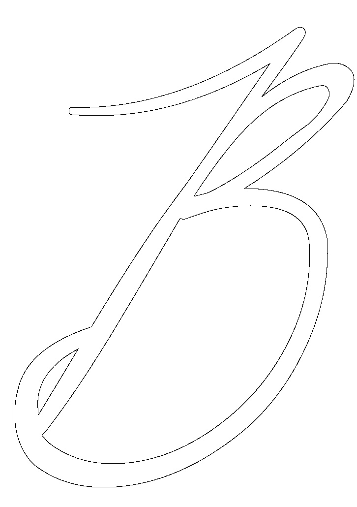
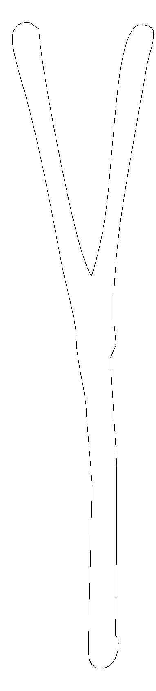
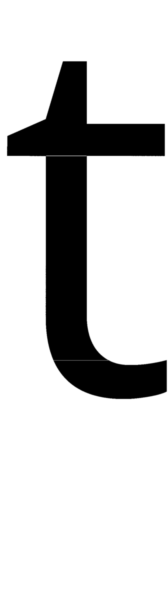
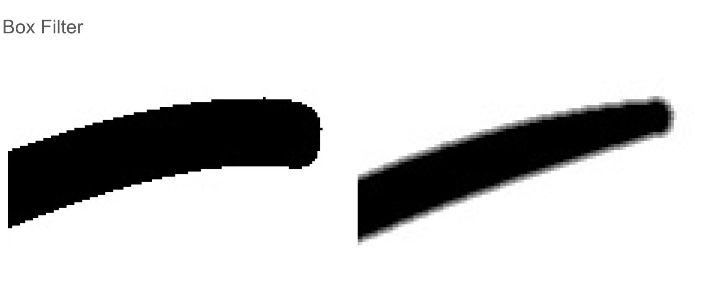
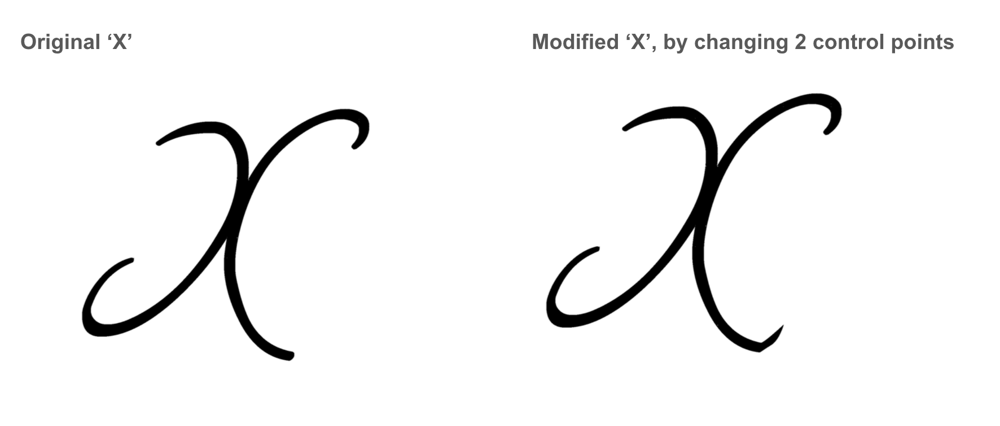

In this project, I created a font editor and rasterizer for TrueType font files, with the functionalities outlined in an interactive GUI. I used a TrueType font file reading library to convert .ttf files into readable XML format. I then computed and rasterized the pixels on the parametric quadratic Bezier curve connecting each sequential set of three control points. I then rasterized each letter from left to right using a curve-intersection algorithm. In order to alter control points, I edited the contents of the XML file and output them to a new .ttf using the fonttools library. After implementing these features, I created a Tkinter GUI for the user to be able to conveniently type and edit fonts. From this project, I most enjoyed experimenting with changing control points and seeing what cool modifications and custom fonts I could render.
In order to work with the TrueType files, I needed a library for reading them. To solve this, I used the fonttools library in Python. Using saveXML, I was able to convert each .ttf file into a readable XML file. From here, I needed to be able to parse the XML file in a manner that I could process the control points of the contours, so I used Python's xml.dom.minidom for this. Now that I was able to read and output ttf files, I could move on to the next stage of Bezier curve rasterization.
Using minidom, I was able to index the TTGylph object for a specificied character. Once I obtained the TTGlyph object for the corresponding character, I needed to extract its control points so that I could render the character's outline. Each TTGlyph object has a Contour object for each curve. For example the letter 'B' has 3 contours, one for each of the closed curves that define its shape. I iterated over all Contour objects for each character and for each Contour, I iterated over all of its Point objects and saved their coordinate values to an array.
Each control point is either on or off the Bezier curve, indicated by each Point object's 'on' attribute. If the point is on the curve, it will be rasterized as part of the character's outline and if it is not, it will be used as a Bezier control point for computing the coordinates that will be on the curve. For every 3 sequential sets of control points, I computed the parametric quadratic Bezier curve from t in [0, 1] using this formula:
point = (1-t)2*p1+2*t*(1-t)*p2+t2*p3
I used a step of t = 1/2000 to ensure that I computed and rasterized every pixel on the curve connecting the points. This formula for the parametric Bezier curve depends on point1 and point3 being on the curve and point2 being off the curve. However, there are times when this format is not met and there will be instances where point1 and point2 will both be off the curve. In this case, what I did was computed the average of these points and defined the resulting average as an additional control point that was on the curve. With this, my algorithm now renders all the contours of each character as intended.
|

|

|
Now that I had rendered the curve outlines of the character, I needed to actually fill the pixels that were inside the region. To do this, I used a row curve intersection algorithm as follows:
Project a line on each row from left to right
Set windingNumber = -1
If projecting line intersects the outline: windingNumber *= -1
If windingNumber == 1 (we are inside outline): Store x value
When we intersect the outline again, we have exited shape. Fill pixels of stored x values and set windingNumber back to -1 (back outside the outline).
However, I also had many issues that I had to resolve, namely with tangents and cusps, in which my algorithm would think that it was making a valid intersection when in fact it was not. In order to resolve this, I added two steps to my rasterization process and made a modification to my original algorithm. The first step was adding a function for checking if a point was a valid intersection and not a tangent line to the outline. I did this by checking when a projection hit a black pixel, if there was another black pixel close by in the row above and below it. If there was, then the intersection was valid because the point was not the tangent line to the outline. However, even with this, my code was still drawing extraneous lines at cusps. To resolve this, I made a significant modification to my original algorithm. My original algorithm was strictly horizontal, meaning it only calculated intersections horizontally. However, if there were false intersections, it would flip and fill the outside of the curves and not the inside region. As such, I changed the algorithm such that if at the end of the row, the windingNumber was 1 (meaning that we are supposedly inside the shape, which should not be possible at the end of the row), I would not draw any pixels on that row because a false intersection must have occurred. Of course, this left a few rows with white space in them so to resolve this, I made a vertical filling algorithm, that iterating over each column instead of each row. After running the horizontal filling loop, I then ran the vertical filling loop, with the same condition that if the number of intersections was odd (implying a false intersection), not to fill the column. The combined result of filling both horizontally from left to right and vertically from bottom to top fills the entire character as intended, without the extraneous lines that resulted from the false intersections of filling from only one direction.
|

|
|
As we can see, while the image on the left has thin white streaks at its sharp tangent features, the image on the right is completely filled. Filling from both directions allows me to better rasterize fonts that have sharp tangents and cusps.
Next to smooth out the curves on my fonts, I implemented a box filter. Each pixel was set to be the average of its 8 surrounding pixels. This allowed me to render a much smoother result to the eye. Below is an example of my antialiasing in action.
|

|
As we can see, there are no jaggies in the image on the right. The box filter leads to a cleaner, smoother rasterization of the character. Antialiasing works!
I originally wanted to write my project in C++ but ended up using Python because it has a fonttools library that best suited my needs to read .ttf files into XML format. However, as you can imagine, iterating over every single pixel in an image represented by a 1000 x 2500 numpy array in Python is extremely slow. I looked into various methods of speeding up my code and decided on using Numba, a machine code wrapper, on my Pythonic numeric array functions. In wrapped my intersection testing algorithms, my horizontal/vertical filling algorithm, and my antialiasing box filter. This yielded amazing results. It improved the rasterization speed of a sample Windsong font ‘B’ from 15 seconds to under 2 seconds, an insane improvement. This allowed me to rasterize fonts much quicker, which is extremely crucial for a user friendly GUI.
Beyond simply rasterizing fonts, I wanted the user to be able to edit fonts and make modifications to save custom .ttf font files. To do this, I added a method to my GUI that displays the control points of each of the character's Contours, so that the user can see what points they can edit. From this, when the user inputs a character to modify and specifies which control point to change, my code finds the corresponding Contour object in the XML file, alters the control point, and saves the results out to a new .ttf file. With this functionality, the user can make any modifications they want to a font and it will save automatically such that the next time the user inputs that character, the new control points will be used to rasterize the character.
|

|
As we can see, there are no jaggies in the image on the right. The box filter leads to a cleaner, smoother rasterization of the character. Antialiasing works!
Now that I have described the implementation and functionality of my program, it's time to see some visual results. The following videos show brief samples of my interactive GUI in action. This first video shows how the user can input text and it will be automatically rasterized to the screen.
This second video demo shows how the user can edit control points to change the appearance of character. In the example below, by changing two control points, I am able to curl the bottom right tail of the letter 'X' to better match the curls of the other four corners.
I based my algorithm for Bezier curve rasterization on this source: http://www.terathon.com/i3d2018_lengyel.pdf
If you want to check out my code for this project, my github repo is here: https://github.com/ethannguonly/custom-font-editor